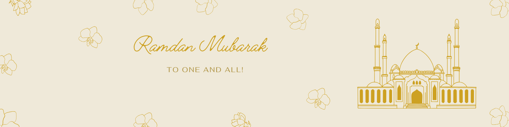

Prayer Timings
Hanafi is commonly used in South Asia and often matches local mosque timings. Change as needed.
| Prayer | Time (12-hour) | Time (24-hour) |
|---|---|---|
| Fajr | -- | -- |
| Dhuhr | -- | -- |
| Asr | -- | -- |
| Maghrib | -- | -- |
| Isha | -- | -- |
| Prayer | Time (12-hour) | Time (24-hour) |
|---|---|---|
| Fajr | -- | -- |
| Dhuhr | -- | -- |
| Asr | -- | -- |
| Maghrib | -- | -- |
| Isha | -- | -- |